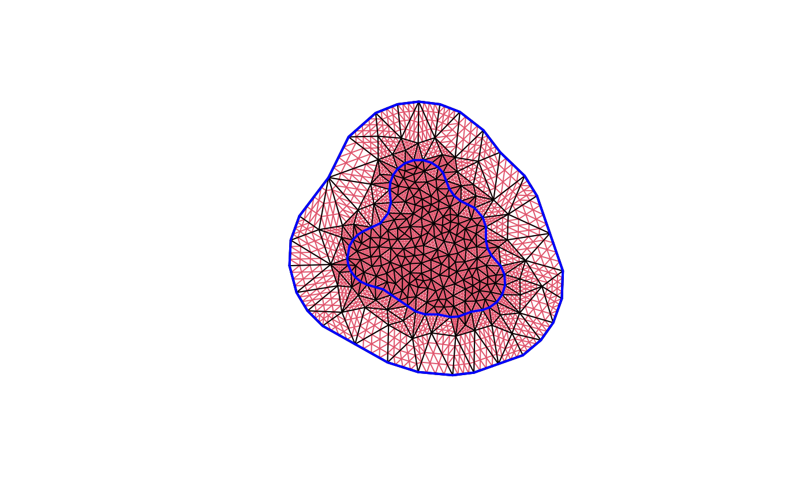

![[Experimental]](figures/lifecycle-experimental.svg) Splits each mesh triangle into
Splits each mesh triangle into (n + 1)^2 subtriangles.
The current version drops any edge constraint information from the mesh.
Arguments
- mesh
an fm_mesh_2d object
- n
number of added points along each edge. Default is 1.
Value
A refined fm_mesh_2d object
Author
Finn Lindgren finn.lindgren@gmail.com
Examples
mesh <- fm_rcdt_2d_inla(
loc = rbind(c(0, 0), c(1, 0), c(0, 1)),
tv = rbind(c(1, 2, 3))
)
mesh_sub <- fm_subdivide(mesh, 3)
mesh
#> fm_mesh_2d object:
#> Manifold: R2
#> V / E / T: 3 / 3 / 1
#> Euler char.: 1
#> Constraints: 3 boundary edges (1 group: 0), 0 boundary edges
#> Bounding box: (0,1) x (0,1)
#> Basis d.o.f.: 3
mesh_sub
#> fm_mesh_2d object:
#> Manifold: R2
#> V / E / T: 15 / 30 / 16
#> Euler char.: 1
#> Constraints: 12 boundary edges (1 group: 0), 0 boundary edges
#> Bounding box: (0,1) x (0,1)
#> Basis d.o.f.: 15
plot(mesh_sub, edge.color = 2)
plot(fm_subdivide(fmexample$mesh, 3), edge.color = 2)
plot(fmexample$mesh, add = TRUE, edge.color = 1)
